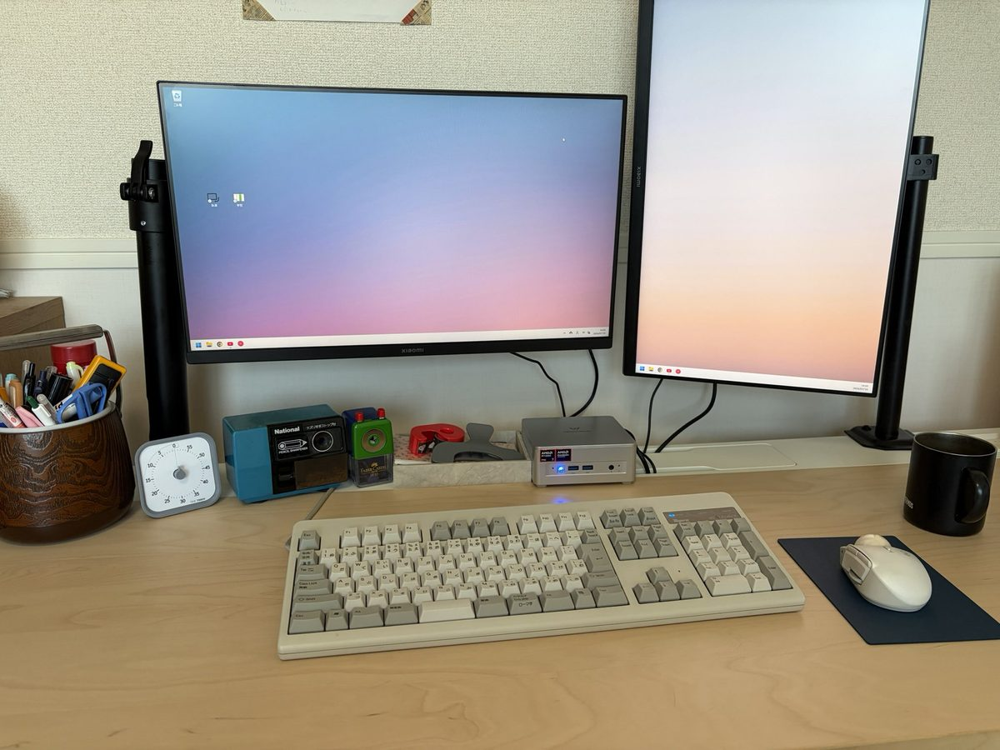

7月の月報です。
これを読んでいる人の中で、Claude Codeを使っている人、いますか？ 7月、Claude Codeがすごいことになっていましたよね。最高性能のモデルといわれるFable5が一番安い価格帯でも一時的に使えるようになって、そのキャンペーンが延長と終了告知を繰り返されていて、セッション制限（使いすぎるとさらにお金を支払わなければならない、「パケ代」的な概念が存在するのですよね）も引き上げられたり、まっさらになったり。その間にChatGPTもアップデートされて、「AI戦争」なんていう表現をしている人も見かけました。
わたしは結構AIが好きです。特にこの公式サイトを作るようになってからwebサイト構築をAIに手伝ってもらうことも多いので、情報はわりとキャッチアップしているつもりです。（蛇足ですが――画像生成系とか映像系・音楽系のAIの知識はからきしです、社会的な問題も山積しているのを見ると、今はその分野に迂闊に手を出したくないな、という気持ちがあります）（さらに蛇足ですが、わたしは自分の書く文章にAIは一切使いません。小説も、コラムも。それは宣言します）
だけど、7月のそれにはほとほと呆れました。AIがどれだけ賢くなっても、仕事ができるようになっても、わたしはひとりで、人間の脳みそはひとつで。「作業が終わりました」「これの承認をお願いします」が繰り返されて、そのスパンが早くなっていくだけで、バターになっちまうよ、わたしは。そんなことを思いました。
生成AIそのものの仕組みが、ガチャのようなものだな、とも最近思うようになりました。性能がどれだけ上がったといえど、結局のところ「あたりが出たら楽しい」、そういう遊びなんじゃないかと。そうやって皮肉を言いたくなるくらい、7月のAI情勢はいやらしいものでした。
それでもやっぱりありがたい、AIの進歩。わたしは健康診断に行くのを先延ばしにしており、妻にも「行ってきなさい」と再三言われつつも行っていない、という状況。それをAIに客観的に判断してもらったところ、「今すぐに受診したほうがいい」ということを言われて、受診することに決めました。子宮筋腫があると2020年ごろに言われていて、その経過をまったく観察していなかったのですね。身体を持たないAIに受診しろと言われるのはなんとも腹立たしいことではありますが、行きました。健康管理の実行は人間にしかできない仕事ですからね。
そうしたら…… びっくり！ あっさりと「月経困難症」の病名がつき、あれよあれよと検査をされ、わたしの月経がなくなることになりました（！）。 お薬で月経を消失させることができるのだそうです。すごいわね。鉄剤も処方され、目に見えて体力が回復して、かなり動けるようになっており、びっくりしています。月経消失薬（ジエノゲストというそうです）はひと月飲んでから服薬を続けるか判断するので、まだ飲み続けることになるのかは分かりません。けれど、妻とAIのおかげでわたしの今月の健康が守られていることは確かです。ちなみに、受診のきっかけとなった子宮筋腫はぜんぜん大きくなっておらず、引き続き経過観察とのことです。よかったね。
健康診断についても文章をまとめたいな、と思っています。こういうことを連続してまとめたレポートって、結構おもしろくて好きです。わたしは自分の好きなものを書きたいですから。
そのほかにも、AIがあってよかった……！ と思ったことがありました。PCがね、壊れたんです。厳密にいえば、まだぎりぎり使えるけれど、明らかな異音がするという状況。1,2年ほど前から「新しいPCほしいなあ」と言っていたこともあり、これを良い機会として買い換えることにしました。

新しいPCのセットアップって、地味にめんどうですよね。旧PCのバックアップをとって、ファイルを移して、必要なアプリケーションを入れて、ログインして、内容をインポートして……。一週間くらいかかるかも……、と冷や汗をかいていたのですが、ここでAIが使えたんです！ スムーズな移行計画を立ててもらい、無駄なく、さっと使えるようセットアップするのにとても役に立ってくれました。物理的なセットアップ（モニターを設置する、PCの電源ケーブルをつなげるなど）と中身のセットアップ含め、3日くらいで終わりました。一週間→3日の差はでかいです。うれしい！ こういうことがあるから、本当に新しいものを試すのが好きですね。たまらないんです、こういうのが。
というわけで、作業環境のメンテナンスと作業者（わたし）のメンテナンスが入った月だったので、書き物という書き物は出さなかった月でしたね。
文学フリマ東京43に出す『不完全な三角形』という新刊があります。これの編集作業をしたり、無配ペーパーを作ったりしていました。『不完全な三角形』を書くのは正直言ってものすごく難しいです。というのも、この原稿を書いている間にも、わたしは自分の新しいものをどんどん作ってしまうんです。『不完全な三角形』はものづくりのエッセイ集にしたいと思っているので、書きたいことが本当に膨れ上がってきてしまって―― それで難航しています。でも、楽しいよ！
ちなみに、今月作ったものはこんな感じ：
編み物の練習もしていて、冬には帽子が編めるようになりたいな！ と思っているし、サマーニットを編むために毛糸も15玉買いました。緊張した。
7月後半から8月頭にかけて夏休みもとりました。その間は「24時間裁縫チャレンジ」というのをやっていました。ストップウォッチをつけて、24時間になるまでひたすら裁縫をやる、もちろん寝食休憩はする、というものです。結局ずっと仕事をしているようなもので、周囲の人々からは「本当に休んでる？」と怪しまれました（！）（笑）。結局別の日にちょっと休みを入れました。そんなもんだよね！
こういうことも『不完全な三角形』に入れたいな、と考えていると、どんどん作りたい本のかたちが変わってきて、それに自分の頭を追いつかせるのに必死です。本って遅いメディアですから、速い変化についていくのに向いていないのかもしれないですね。それでも本が作りたいので、やってみます。
8月からは文章に舵を切っていくつもりです。締め切りを設定して、それに向かって形を整えていく作業です。楽しみ、燃えるね……！
11月8日、ぜひ空けておいてください。楽しみにしています。楽しみにしていてね！
それじゃあ、またね！